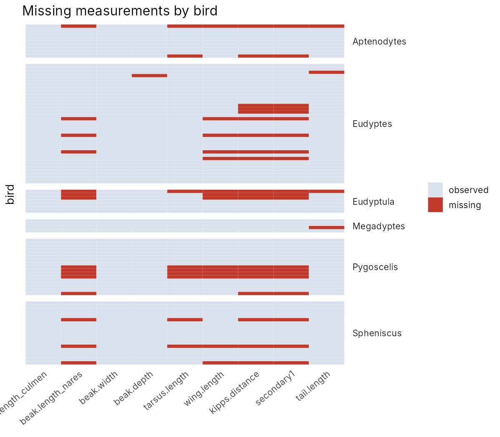
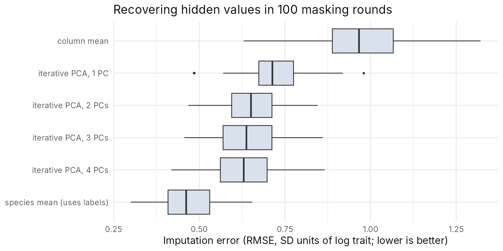
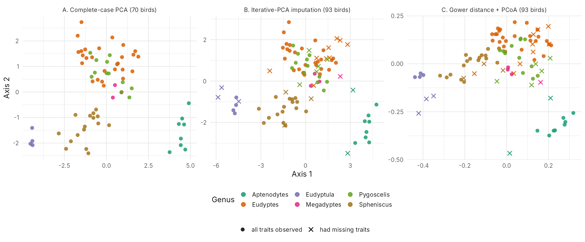
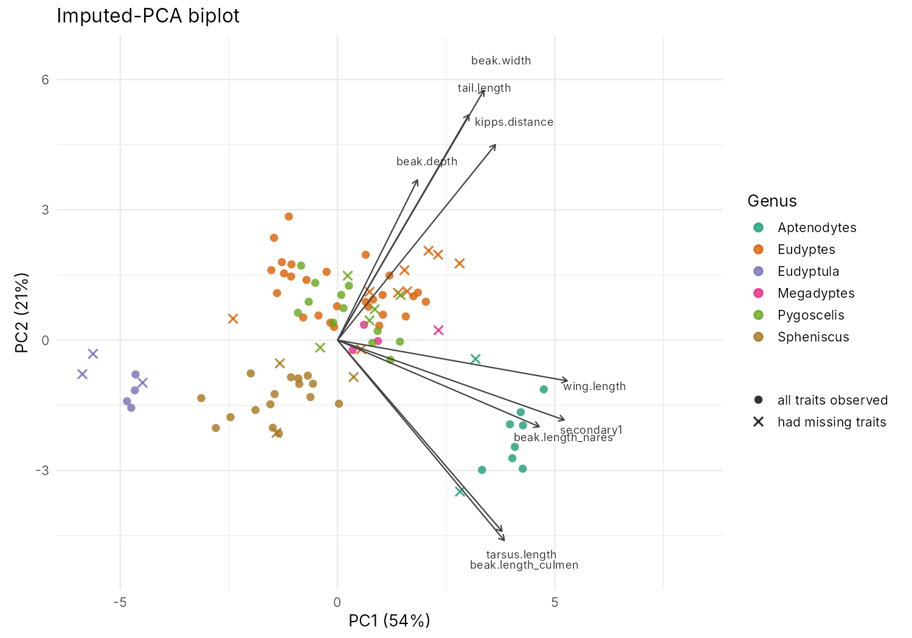

Wing length vs. beak (culmen) length across all penguins: r ≈ 0.69. Penguins with longer wings tend to have longer beaks.
Q2 (Nonoyeyey): what about missing values?
23 of 93 birds are missing at least one measurement, and standard PCA can't handle that.
Missing values come in blocks

Birds missing Kipp's distance also miss secondary-feather length, and usually wing length too.
Three ways to handle it
Approach
Idea
Birds kept
A. Complete-case PCA
drop incomplete birds
70
B. Iterative PCA imputation
fill gaps from the PCA structure, repeat until stable
93
C. Gower distance + PCoA
compare birds only on traits both have
93
All traits log-transformed and standardized. B is the algorithm behind missMDA::imputePCA, written in base R.
Does the imputation actually work?

We hid known values (copying real missingness patterns) 100 times. Iterative PCA cuts the error by about a third compared with mean filling: 0.63 vs 0.98 SD.
All three maps tell the same story

Procrustes agreement on shared birds: A vs B = 0.999; Gower vs the PCAs ≈ 0.95. The × birds (imputed) sit inside their own genus clusters.
What the axes mean

PC1 (54%) = size little penguins → king and emperor penguins
PC2 (21%) = shape wide bills and long tails (Eudyptes, Pygoscelis) vs. long slender bills and short tails (Spheniscus, Aptenodytes)
Takeaways
Dropping incomplete birds wastes 25% of the sample.
Iterative PCA imputation keeps everyone, is validated on held-out values, and gives the same map.
Gower PCoA is a no-imputation check that agrees.
Always mark imputed points so viewers know which are less certain.
Caveat: assumes values are missing at random, and most species have only 4–5 birds.
Full analysis and code are on our MyST website (built with GitHub Actions and deployed to GitHub Pages).